Modelos separados por entorno y con filtros#
import pandas as pd
import numpy as np
import matplotlib.pyplot as plt
import seaborn as sns
import warnings
from sklearn.preprocessing import MinMaxScaler, LabelEncoder, OneHotEncoder, PowerTransformer, StandardScaler
from sklearn.model_selection import train_test_split, GridSearchCV
from sklearn.neighbors import KNeighborsRegressor
from sklearn import neighbors
from sklearn.metrics import mean_absolute_error, mean_squared_error, mean_squared_log_error, r2_score, explained_variance_score, root_mean_squared_error
import scipy.stats as stats
from scipy.stats import kurtosis, boxcox
import mglearn
import matplotlib
warnings.filterwarnings('ignore')
from sklearn.pipeline import Pipeline
from sklearn.neighbors import KNeighborsRegressor
from sklearn.linear_model import LinearRegression
from sklearn.linear_model import Ridge
from sklearn.linear_model import Lasso
from sklearn.ensemble import RandomForestRegressor
import xgboost as xgb
from xgboost import XGBRegressor
from sklearn.svm import SVR
from sklearn.ensemble import StackingRegressor
from sklearn.ensemble import GradientBoostingRegressor, ExtraTreesRegressor, AdaBoostRegressor
import lightgbm as lgb
from sklearn.linear_model import HuberRegressor, BayesianRidge, QuantileRegressor, TheilSenRegressor
from sklearn.neural_network import MLPRegressor
from sklearn.experimental import enable_hist_gradient_boosting # noqa
from sklearn.ensemble import HistGradientBoostingRegressor
from catboost import CatBoostRegressor
from sklearn.gaussian_process import GaussianProcessRegressor
from sklearn.gaussian_process.kernels import RBF, WhiteKernel
from sklearn.multioutput import MultiOutputRegressor
df= pd.read_excel('C:/Users/elias/OneDrive/Desktop/MachineLearning/MLProject/CopiaDataBaseSGC.xlsx')
df.drop(["Record Sequence Number"], axis=1, inplace=True)
df.drop(["Station ID"], axis=1, inplace=True)
df.drop(["Station Code"], axis=1, inplace=True)
df.drop(["Magnitude type"], axis=1, inplace=True)
df.drop(["EQID"], axis=1, inplace=True)
df.drop(["Valor_T1.5"], axis=1, inplace=True)
df.drop(["Tmax"], axis=1, inplace=True)
df.drop(["Epicenter Latitude (deg; positive N)"], axis=1, inplace=True)
df.drop(["Epicenter Longitude (deg; positive E)"], axis=1, inplace=True)
df.drop(["Station Latitude (deg positive N)"], axis=1, inplace=True)
df.drop(["Station Longitude (deg positive E)"], axis=1, inplace=True)
df.drop(["Topografía"], axis=1, inplace=True)
df.drop(["Geología"], axis=1, inplace=True)
df.drop(["Nodal Plane 1 Rake Angle (deg)"], axis=1, inplace=True)
df.drop(["Nodal Plane 2 Rake Angle (deg)"], axis=1, inplace=True)
df.drop(["Nodal Plane 2 Dip (deg)"], axis=1, inplace=True)
df.drop(["Nodal Plane 2 Strike (deg)"], axis=1, inplace=True)
df.drop(["Rx_OpenQuake"], axis=1, inplace=True)
df.drop(["Ry0_OpenQuake"], axis=1, inplace=True)
df.drop(["Rjb_OpenQuake"], axis=1, inplace=True)
#df.drop(["Rrup_OpenQuake"], axis=1, inplace=True)
df.drop(["Repi_OpenQuake"], axis=1, inplace=True)
#df.drop(["Rhypo_OpenQuake"], axis=1, inplace=True)
df.drop(["Station Elevation (m)"], axis=1, inplace=True)
df.drop(["Soil_Class"], axis=1, inplace=True)
df.drop(["Nodal Plane 1 Strike (deg)"], axis=1, inplace=True)
df.drop(["Nodal Plane 1 Dip (deg)"], axis=1, inplace=True)
df.drop(["Fault Plane (1; 2; X)"], axis=1, inplace=True)
df.drop(["Style-of-Faulting (S; R; N; U)"], axis=1, inplace=True)
#df = df.iloc[:, :df.columns.get_loc("T_0.01_RotD50") + 1]
df_copy = df.copy()
#df_copy["T_0.01_RotD50"]= np.log(df_copy["T_0.01_RotD50"])
#df_copy["Rhypo_OpenQuake"]= np.log(df_copy["Rhypo_OpenQuake"])
df_crustal = df_copy[df_copy['Tectonic environment (Crustal; Inslab; Interface; Stable; Deep; Volcanic; Oceanic_crust)'] == 'Crustal'].copy()
df_subduction = df[df['Tectonic environment (Crustal; Inslab; Interface; Stable; Deep; Volcanic; Oceanic_crust)'].isin(['Inslab', 'Interface'])].copy()
df_deep = df_copy[df_copy['Tectonic environment (Crustal; Inslab; Interface; Stable; Deep; Volcanic; Oceanic_crust)'] == 'Deep'].copy()
df_crustal
| Hypocenter Depth (km) | Magnitude | Tectonic environment (Crustal; Inslab; Interface; Stable; Deep; Volcanic; Oceanic_crust) | Tn | Rrup_OpenQuake | Rhypo_OpenQuake | T_0.01_RotD50 | T_0.02_RotD50 | T_0.03_RotD50 | T_0.04_RotD50 | ... | T_2.5_RotD50 | T_3.0_RotD50 | T_4.0_RotD50 | T_5.0_RotD50 | T_6.0_RotD50 | T_7.0_RotD50 | T_7.5_RotD50 | T_8.0_RotD50 | T_9.0_RotD50 | T_10.0_RotD50 | |
|---|---|---|---|---|---|---|---|---|---|---|---|---|---|---|---|---|---|---|---|---|---|
| 0 | 14.7 | 5.8671 | Crustal | 0.24 | 86.623229 | 93.551751 | 4.755494 | 4.800657 | 4.892163 | 5.042099 | ... | 3.343425 | 2.299123 | 1.315019 | 1.234997 | 1.237165 | 0.987941 | 0.743912 | 0.636538 | 0.507903 | 0.401487 |
| 1 | 33.1 | 5.0567 | Crustal | 0.24 | 99.461616 | 102.497369 | 10.887828 | 11.126960 | 11.962335 | 14.795546 | ... | 0.315437 | 0.146246 | 0.076441 | 0.056793 | 0.040160 | 0.027227 | 0.022587 | 0.018555 | 0.014793 | 0.012429 |
| 2 | 14.0 | 6.0202 | Crustal | 0.16 | 174.684394 | 181.353681 | 4.847060 | 4.911509 | 5.065576 | 5.246479 | ... | 1.708121 | 0.888446 | 0.410937 | 0.252350 | 0.162552 | 0.115164 | 0.098742 | 0.085727 | 0.066178 | 0.053164 |
| 3 | 14.0 | 6.2562 | Crustal | 0.16 | 244.405678 | 254.752031 | 1.814338 | 1.952437 | 2.083609 | 1.984019 | ... | 0.230457 | 0.136652 | 0.127038 | 0.090174 | 0.049763 | 0.032587 | 0.027046 | 0.020240 | 0.014986 | 0.012210 |
| 4 | 17.0 | 6.1355 | Crustal | 0.16 | 135.354859 | 141.709990 | 9.462926 | 9.622603 | 9.635580 | 10.581168 | ... | 1.166125 | 0.831870 | 0.424420 | 0.296639 | 0.202097 | 0.176231 | 0.155668 | 0.147029 | 0.163535 | 0.134796 |
| ... | ... | ... | ... | ... | ... | ... | ... | ... | ... | ... | ... | ... | ... | ... | ... | ... | ... | ... | ... | ... | ... |
| 4620 | 15.0 | 4.3000 | Crustal | 0.50 | 296.031423 | 297.445289 | 0.403902 | 0.407545 | 0.412280 | 0.418098 | ... | 0.018411 | 0.012810 | 0.006135 | 0.003363 | 0.002155 | 0.002217 | 0.002157 | 0.001951 | 0.002047 | 0.001687 |
| 4621 | 16.0 | 4.0000 | Crustal | 0.50 | 295.931516 | 296.611856 | 0.208088 | 0.210143 | 0.210303 | 0.213729 | ... | 0.008297 | 0.005641 | 0.003159 | 0.001720 | 0.001208 | 0.000880 | 0.000797 | 0.000832 | 0.000692 | 0.000637 |
| 4622 | 16.0 | 4.4000 | Crustal | 0.50 | 296.180748 | 297.506537 | 0.685194 | 0.686584 | 0.690435 | 0.696905 | ... | 0.043865 | 0.026151 | 0.013874 | 0.008528 | 0.005441 | 0.004235 | 0.003670 | 0.003186 | 0.002827 | 0.002370 |
| 4623 | 4.0 | 5.1000 | Crustal | 0.50 | 719.316553 | 722.527004 | 0.046228 | 0.116454 | 0.138176 | 0.098851 | ... | 0.018875 | 0.011364 | 0.008718 | 0.004197 | 0.002960 | 0.004321 | 0.004058 | 0.003591 | 0.003558 | 0.003089 |
| 4624 | 9.0 | 4.2000 | Crustal | 0.50 | 187.468369 | 188.033459 | 0.192066 | 0.196243 | 0.192519 | 0.195369 | ... | 0.018089 | 0.011190 | 0.006747 | 0.004305 | 0.002442 | 0.001595 | 0.001310 | 0.001147 | 0.000945 | 0.000714 |
4625 rows × 79 columns
df_subduction
| Hypocenter Depth (km) | Magnitude | Tectonic environment (Crustal; Inslab; Interface; Stable; Deep; Volcanic; Oceanic_crust) | Tn | Rrup_OpenQuake | Rhypo_OpenQuake | T_0.01_RotD50 | T_0.02_RotD50 | T_0.03_RotD50 | T_0.04_RotD50 | ... | T_2.5_RotD50 | T_3.0_RotD50 | T_4.0_RotD50 | T_5.0_RotD50 | T_6.0_RotD50 | T_7.0_RotD50 | T_7.5_RotD50 | T_8.0_RotD50 | T_9.0_RotD50 | T_10.0_RotD50 | |
|---|---|---|---|---|---|---|---|---|---|---|---|---|---|---|---|---|---|---|---|---|---|
| 6565 | 178.0 | 6.3362 | Inslab | 0.24 | 228.621778 | 241.727647 | 2.390327 | 2.448996 | 2.551538 | 2.728272 | ... | 0.046891 | 0.028735 | 0.015313 | 0.010000 | 0.007254 | 0.005620 | 0.004779 | 0.004211 | 0.003409 | 0.002781 |
| 6566 | 120.0 | 6.5251 | Inslab | 0.16 | 137.730823 | 150.015713 | 63.968883 | 64.787702 | 66.405512 | 70.138376 | ... | 4.029374 | 2.495921 | 2.145986 | 1.666906 | 1.226747 | 0.939381 | 0.801422 | 0.668689 | 0.510683 | 0.411196 |
| 6567 | 109.0 | 5.2969 | Inslab | 0.16 | 208.339511 | 210.496422 | 3.302280 | 3.600635 | 3.415243 | 3.622899 | ... | 0.181359 | 0.172852 | 0.108003 | 0.052255 | 0.055582 | 0.035405 | 0.033644 | 0.026809 | 0.017548 | 0.013713 |
| 6568 | 103.3 | 5.7756 | Inslab | 0.16 | 174.665150 | 181.726204 | 12.216639 | 12.525386 | 12.656565 | 13.714364 | ... | 0.590518 | 0.368640 | 0.182975 | 0.094676 | 0.060026 | 0.043579 | 0.036037 | 0.031590 | 0.026432 | 0.020250 |
| 6569 | 206.0 | 6.7397 | Inslab | 0.16 | 289.922702 | 294.486478 | 10.392811 | 10.586116 | 10.564264 | 11.938985 | ... | 1.215354 | 0.586775 | 0.331877 | 0.170280 | 0.110104 | 0.076829 | 0.065947 | 0.057004 | 0.044814 | 0.034682 |
| ... | ... | ... | ... | ... | ... | ... | ... | ... | ... | ... | ... | ... | ... | ... | ... | ... | ... | ... | ... | ... | ... |
| 8806 | 5.0 | 5.6000 | Interface | 0.50 | 1230.049890 | 1236.043904 | 0.004725 | 0.008197 | 0.006540 | 0.005759 | ... | 0.004976 | 0.005132 | 0.005019 | 0.004619 | 0.004156 | 0.004023 | 0.003972 | 0.004305 | 0.004837 | 0.004476 |
| 8807 | 10.0 | 5.0181 | Interface | 0.50 | 1248.234684 | 1253.495004 | 0.003128 | 0.008441 | 0.006622 | 0.008719 | ... | 0.002363 | 0.002004 | 0.001086 | 0.000931 | 0.000823 | 0.000632 | 0.000696 | 0.000622 | 0.000673 | 0.000610 |
| 8808 | 47.0 | 5.0304 | Interface | 0.50 | 1209.579637 | 1217.416127 | 0.003101 | 0.008199 | 0.005089 | 0.004452 | ... | 0.002001 | 0.001780 | 0.001028 | 0.001106 | 0.000691 | 0.000553 | 0.000531 | 0.000546 | 0.000463 | 0.000483 |
| 8809 | 10.0 | 5.0266 | Interface | 0.50 | 725.018483 | 729.171353 | 0.020313 | 0.080841 | 0.038791 | 0.046940 | ... | 0.002233 | 0.002062 | 0.001421 | 0.001202 | 0.000882 | 0.000795 | 0.000703 | 0.000733 | 0.000629 | 0.000560 |
| 8810 | 20.0 | 4.7000 | Interface | 0.50 | 872.100140 | 876.453666 | 0.007543 | 0.013961 | 0.018879 | 0.021035 | ... | 0.000925 | 0.000907 | 0.000780 | 0.000764 | 0.000632 | 0.000468 | 0.000468 | 0.000519 | 0.000489 | 0.000390 |
2246 rows × 79 columns
df_deep
| Hypocenter Depth (km) | Magnitude | Tectonic environment (Crustal; Inslab; Interface; Stable; Deep; Volcanic; Oceanic_crust) | Tn | Rrup_OpenQuake | Rhypo_OpenQuake | T_0.01_RotD50 | T_0.02_RotD50 | T_0.03_RotD50 | T_0.04_RotD50 | ... | T_2.5_RotD50 | T_3.0_RotD50 | T_4.0_RotD50 | T_5.0_RotD50 | T_6.0_RotD50 | T_7.0_RotD50 | T_7.5_RotD50 | T_8.0_RotD50 | T_9.0_RotD50 | T_10.0_RotD50 | |
|---|---|---|---|---|---|---|---|---|---|---|---|---|---|---|---|---|---|---|---|---|---|
| 4625 | 160.9 | 5.2943 | Deep | 0.24 | 336.403251 | 340.068350 | 2.824305 | 2.853066 | 2.887672 | 2.942054 | ... | 0.177938 | 0.145786 | 0.080921 | 0.038289 | 0.024272 | 0.016960 | 0.014051 | 0.011623 | 0.009538 | 0.007932 |
| 4626 | 161.1 | 5.4046 | Deep | 0.24 | 332.763531 | 340.004092 | 3.090696 | 3.120594 | 3.177530 | 3.199094 | ... | 0.287515 | 0.185111 | 0.093480 | 0.046516 | 0.029728 | 0.023065 | 0.020641 | 0.018569 | 0.014432 | 0.011837 |
| 4627 | 155.0 | 6.2492 | Deep | 0.24 | 325.574327 | 341.356272 | 11.454331 | 11.528240 | 11.684620 | 11.847215 | ... | 1.333088 | 1.042788 | 0.467530 | 0.229266 | 0.133321 | 0.096438 | 0.083692 | 0.073329 | 0.056739 | 0.045196 |
| 4628 | 160.9 | 5.2943 | Deep | 0.16 | 378.127438 | 384.346199 | 1.508480 | 1.522253 | 1.545044 | 1.579676 | ... | 0.053348 | 0.033402 | 0.017404 | 0.010972 | 0.008759 | 0.006749 | 0.006340 | 0.005672 | 0.004780 | 0.003613 |
| 4629 | 160.9 | 5.2943 | Deep | 0.12 | 387.041847 | 393.066224 | 1.075587 | 1.092522 | 1.107815 | 1.134858 | ... | 0.076606 | 0.056582 | 0.028080 | 0.019548 | 0.013019 | 0.009359 | 0.007694 | 0.006340 | 0.004500 | 0.003365 |
| ... | ... | ... | ... | ... | ... | ... | ... | ... | ... | ... | ... | ... | ... | ... | ... | ... | ... | ... | ... | ... | ... |
| 6560 | 152.0 | 4.6000 | Deep | 0.50 | 234.121790 | 236.038843 | 0.701221 | 0.704603 | 0.707515 | 0.718484 | ... | 0.047471 | 0.025564 | 0.010800 | 0.007303 | 0.005129 | 0.003640 | 0.003029 | 0.002708 | 0.002122 | 0.001650 |
| 6561 | 143.0 | 4.6000 | Deep | 0.50 | 227.938463 | 231.026960 | 0.251664 | 0.254559 | 0.257574 | 0.265571 | ... | 0.016890 | 0.009905 | 0.005023 | 0.002836 | 0.001853 | 0.001375 | 0.001143 | 0.001052 | 0.000887 | 0.000710 |
| 6562 | 126.0 | 4.9000 | Deep | 0.50 | 547.211357 | 553.688713 | 0.073324 | 0.074352 | 0.074431 | 0.076444 | ... | 0.022858 | 0.012222 | 0.005732 | 0.003210 | 0.002213 | 0.001502 | 0.001402 | 0.001128 | 0.000949 | 0.000728 |
| 6563 | 153.0 | 5.2000 | Deep | 0.50 | 232.918431 | 236.422839 | 0.997223 | 1.016831 | 1.057104 | 1.163515 | ... | 0.080847 | 0.045275 | 0.023259 | 0.014401 | 0.009592 | 0.006662 | 0.005845 | 0.005080 | 0.003934 | 0.002923 |
| 6564 | 150.0 | 4.6000 | Deep | 0.50 | 231.767387 | 235.373785 | 0.395032 | 0.403074 | 0.406890 | 0.435180 | ... | 0.015020 | 0.010496 | 0.004911 | 0.003324 | 0.001950 | 0.001411 | 0.001378 | 0.001107 | 0.000978 | 0.000818 |
1940 rows × 79 columns
Filtros#
Filtros Crustal#
df_crustal = df_crustal[(df_crustal['Magnitude'] > 4.5) & (df_crustal['Magnitude'] < 6.8)]
df_crustal = df_crustal[(df_crustal['Rrup_OpenQuake'] > 13) & (df_crustal['Rrup_OpenQuake'] < 350)]
df_crustal = df_crustal[df_crustal['Hypocenter Depth (km)'] < 60]
df_crustal = df_crustal[df_crustal['Rrup_OpenQuake'] < 350]
df_crustal.reset_index(drop=True, inplace=True)
df_crustal
| Hypocenter Depth (km) | Magnitude | Tectonic environment (Crustal; Inslab; Interface; Stable; Deep; Volcanic; Oceanic_crust) | Tn | Rrup_OpenQuake | Rhypo_OpenQuake | T_0.01_RotD50 | T_0.02_RotD50 | T_0.03_RotD50 | T_0.04_RotD50 | ... | T_2.5_RotD50 | T_3.0_RotD50 | T_4.0_RotD50 | T_5.0_RotD50 | T_6.0_RotD50 | T_7.0_RotD50 | T_7.5_RotD50 | T_8.0_RotD50 | T_9.0_RotD50 | T_10.0_RotD50 | |
|---|---|---|---|---|---|---|---|---|---|---|---|---|---|---|---|---|---|---|---|---|---|
| 0 | 14.7 | 5.8671 | Crustal | 0.24 | 86.623229 | 93.551751 | 4.755494 | 4.800657 | 4.892163 | 5.042099 | ... | 3.343425 | 2.299123 | 1.315019 | 1.234997 | 1.237165 | 0.987941 | 0.743912 | 0.636538 | 0.507903 | 0.401487 |
| 1 | 33.1 | 5.0567 | Crustal | 0.24 | 99.461616 | 102.497369 | 10.887828 | 11.126960 | 11.962335 | 14.795546 | ... | 0.315437 | 0.146246 | 0.076441 | 0.056793 | 0.040160 | 0.027227 | 0.022587 | 0.018555 | 0.014793 | 0.012429 |
| 2 | 14.0 | 6.0202 | Crustal | 0.16 | 174.684394 | 181.353681 | 4.847060 | 4.911509 | 5.065576 | 5.246479 | ... | 1.708121 | 0.888446 | 0.410937 | 0.252350 | 0.162552 | 0.115164 | 0.098742 | 0.085727 | 0.066178 | 0.053164 |
| 3 | 14.0 | 6.2562 | Crustal | 0.16 | 244.405678 | 254.752031 | 1.814338 | 1.952437 | 2.083609 | 1.984019 | ... | 0.230457 | 0.136652 | 0.127038 | 0.090174 | 0.049763 | 0.032587 | 0.027046 | 0.020240 | 0.014986 | 0.012210 |
| 4 | 17.0 | 6.1355 | Crustal | 0.16 | 135.354859 | 141.709990 | 9.462926 | 9.622603 | 9.635580 | 10.581168 | ... | 1.166125 | 0.831870 | 0.424420 | 0.296639 | 0.202097 | 0.176231 | 0.155668 | 0.147029 | 0.163535 | 0.134796 |
| ... | ... | ... | ... | ... | ... | ... | ... | ... | ... | ... | ... | ... | ... | ... | ... | ... | ... | ... | ... | ... | ... |
| 968 | 47.8 | 4.8688 | Crustal | 0.50 | 329.481031 | 332.517301 | 0.619515 | 0.621042 | 0.623192 | 0.626090 | ... | 0.067199 | 0.056573 | 0.026869 | 0.013040 | 0.009591 | 0.006127 | 0.005123 | 0.004132 | 0.003297 | 0.002804 |
| 969 | 10.0 | 5.9519 | Crustal | 0.50 | 271.235666 | 278.658461 | 8.794320 | 8.821259 | 8.872291 | 8.956253 | ... | 1.527142 | 0.939965 | 0.528409 | 0.302801 | 0.251188 | 0.202516 | 0.191780 | 0.222371 | 0.204124 | 0.162766 |
| 970 | 10.0 | 5.7499 | Crustal | 0.50 | 282.579673 | 288.327721 | 4.401290 | 4.413655 | 4.434019 | 4.459130 | ... | 0.831630 | 0.609809 | 0.305092 | 0.226591 | 0.165559 | 0.171955 | 0.180575 | 0.180707 | 0.137984 | 0.117232 |
| 971 | 10.0 | 4.7000 | Crustal | 0.50 | 293.340059 | 294.509089 | 2.084397 | 2.091699 | 2.110858 | 2.136673 | ... | 0.095512 | 0.064818 | 0.030172 | 0.017779 | 0.013233 | 0.009312 | 0.009256 | 0.008168 | 0.006806 | 0.005521 |
| 972 | 19.0 | 4.6000 | Crustal | 0.50 | 293.941798 | 296.004668 | 1.424355 | 1.431193 | 1.444333 | 1.461938 | ... | 0.058445 | 0.037195 | 0.023641 | 0.012742 | 0.008231 | 0.006239 | 0.005480 | 0.004686 | 0.003617 | 0.002990 |
973 rows × 79 columns
Filtros Inslab e Interface#
#df_subduction["T_0.01_RotD50"] = np.exp(df_subduction["T_0.01_RotD50"])
df_subduction["T_0.01_RotD50"]= df_subduction["T_0.01_RotD50"]/980
df_subduction['T_0.01_RotD50'].min()
2.059001020408163e-06
df_subduction = df_subduction[df_subduction['T_0.01_RotD50'] > 0.0001]
df_subduction["T_0.01_RotD50"] = df_subduction["T_0.01_RotD50"]*980
#df_subduction["T_0.01_RotD50"] = np.log(df_subduction["T_0.01_RotD50"])
df_subduction = df_subduction[df_subduction['Rhypo_OpenQuake'] < 350]
df_subduction.reset_index(drop=True, inplace=True)
df_subduction
| Hypocenter Depth (km) | Magnitude | Tectonic environment (Crustal; Inslab; Interface; Stable; Deep; Volcanic; Oceanic_crust) | Tn | Rrup_OpenQuake | Rhypo_OpenQuake | T_0.01_RotD50 | T_0.02_RotD50 | T_0.03_RotD50 | T_0.04_RotD50 | ... | T_2.5_RotD50 | T_3.0_RotD50 | T_4.0_RotD50 | T_5.0_RotD50 | T_6.0_RotD50 | T_7.0_RotD50 | T_7.5_RotD50 | T_8.0_RotD50 | T_9.0_RotD50 | T_10.0_RotD50 | |
|---|---|---|---|---|---|---|---|---|---|---|---|---|---|---|---|---|---|---|---|---|---|
| 0 | 178.0 | 6.3362 | Inslab | 0.24 | 228.621778 | 241.727647 | 2.390327 | 2.448996 | 2.551538 | 2.728272 | ... | 0.046891 | 0.028735 | 0.015313 | 0.010000 | 0.007254 | 0.005620 | 0.004779 | 0.004211 | 0.003409 | 0.002781 |
| 1 | 120.0 | 6.5251 | Inslab | 0.16 | 137.730823 | 150.015713 | 63.968883 | 64.787702 | 66.405512 | 70.138376 | ... | 4.029374 | 2.495921 | 2.145986 | 1.666906 | 1.226747 | 0.939381 | 0.801422 | 0.668689 | 0.510683 | 0.411196 |
| 2 | 109.0 | 5.2969 | Inslab | 0.16 | 208.339511 | 210.496422 | 3.302280 | 3.600635 | 3.415243 | 3.622899 | ... | 0.181359 | 0.172852 | 0.108003 | 0.052255 | 0.055582 | 0.035405 | 0.033644 | 0.026809 | 0.017548 | 0.013713 |
| 3 | 103.3 | 5.7756 | Inslab | 0.16 | 174.665150 | 181.726204 | 12.216639 | 12.525386 | 12.656565 | 13.714364 | ... | 0.590518 | 0.368640 | 0.182975 | 0.094676 | 0.060026 | 0.043579 | 0.036037 | 0.031590 | 0.026432 | 0.020250 |
| 4 | 206.0 | 6.7397 | Inslab | 0.16 | 289.922702 | 294.486478 | 10.392811 | 10.586116 | 10.564264 | 11.938985 | ... | 1.215354 | 0.586775 | 0.331877 | 0.170280 | 0.110104 | 0.076829 | 0.065947 | 0.057004 | 0.044814 | 0.034682 |
| ... | ... | ... | ... | ... | ... | ... | ... | ... | ... | ... | ... | ... | ... | ... | ... | ... | ... | ... | ... | ... | ... |
| 872 | 10.0 | 4.8714 | Interface | 0.58 | 107.863119 | 110.834458 | 2.102708 | 2.118841 | 2.158411 | 2.190419 | ... | 0.114037 | 0.064195 | 0.032697 | 0.021795 | 0.015691 | 0.012899 | 0.010649 | 0.008750 | 0.006420 | 0.005228 |
| 873 | 10.0 | 5.0266 | Interface | 0.58 | 308.828267 | 312.351016 | 0.124349 | 0.154077 | 0.149956 | 0.231048 | ... | 0.001744 | 0.002344 | 0.001485 | 0.001550 | 0.001398 | 0.001320 | 0.001196 | 0.001077 | 0.001114 | 0.001186 |
| 874 | 20.0 | 4.7000 | Interface | 0.06 | 97.475827 | 99.316956 | 1.736866 | 2.016624 | 2.468569 | 3.289297 | ... | 0.047219 | 0.032914 | 0.019453 | 0.012265 | 0.015324 | 0.013837 | 0.010681 | 0.007361 | 0.004970 | 0.003367 |
| 875 | 10.0 | 4.8714 | Interface | 0.25 | 272.751403 | 274.921125 | 0.213437 | 0.215051 | 0.216112 | 0.217389 | ... | 0.009947 | 0.005816 | 0.002455 | 0.001750 | 0.001675 | 0.001608 | 0.001766 | 0.001631 | 0.001770 | 0.001843 |
| 876 | 31.0 | 4.4000 | Interface | 0.10 | 70.432378 | 71.564661 | 3.820162 | 4.058544 | 5.263782 | 6.219200 | ... | 0.034450 | 0.022661 | 0.011312 | 0.007286 | 0.004926 | 0.003783 | 0.003137 | 0.002824 | 0.002270 | 0.001761 |
877 rows × 79 columns
Modelos#
df_crustal["Rrup_OpenQuake"]= np.log(df_crustal["Rrup_OpenQuake"])
df_crustal['Magnitude'].max()
6.7765
df_crustal.drop(["Rhypo_OpenQuake"], axis=1, inplace=True)
df_crustal.drop(["Tectonic environment (Crustal; Inslab; Interface; Stable; Deep; Volcanic; Oceanic_crust)"], axis=1, inplace=True)
Sa_Crustal1 = df_crustal.filter(regex="^T_.*_RotD50$").columns
Sa_Crustal = df_crustal.filter(regex="^T_.*_RotD50$").columns
"""Sa_Crustal = ['T_0.01_RotD50', 'T_0.02_RotD50', 'T_0.03_RotD50', 'T_0.04_RotD50',
'T_0.05_RotD50','T_0.075_RotD50','T_0.1_RotD50','T_0.15_RotD50','T_0.2_RotD50','T_0.25_RotD50','T_0.3_RotD50',
'T_0.4_RotD50','T_0.5_RotD50','T_0.75_RotD50','T_1.0_RotD50','T_1.5_RotD50','T_2.0_RotD50','T_3.0_RotD50',
'T_4.0_RotD50','T_5.0_RotD50','T_6.0_RotD50','T_10.0_RotD50']"""
#Sa_Crustal
"Sa_Crustal = ['T_0.01_RotD50', 'T_0.02_RotD50', 'T_0.03_RotD50', 'T_0.04_RotD50',\n 'T_0.05_RotD50','T_0.075_RotD50','T_0.1_RotD50','T_0.15_RotD50','T_0.2_RotD50','T_0.25_RotD50','T_0.3_RotD50',\n 'T_0.4_RotD50','T_0.5_RotD50','T_0.75_RotD50','T_1.0_RotD50','T_1.5_RotD50','T_2.0_RotD50','T_3.0_RotD50',\n 'T_4.0_RotD50','T_5.0_RotD50','T_6.0_RotD50','T_10.0_RotD50']"
Crustal#
df_crustal[Sa_Crustal] = np.log(df_crustal[Sa_Crustal])
X_Crustal = df_crustal.drop(columns=Sa_Crustal1).values
Y_Crustal = df_crustal[Sa_Crustal].values
X_train_Crustal, X_test_Crustal, y_train_Crustal, y_test_Crustal = train_test_split(X_Crustal, Y_Crustal, test_size=0.3, random_state=0)
modelo_crustal = MultiOutputRegressor(CatBoostRegressor(), n_jobs=-1)
modelo_crustal.fit(X_train_Crustal, y_train_Crustal)
---------------------------------------------------------------------------
KeyboardInterrupt Traceback (most recent call last)
Cell In[26], line 2
1 modelo_crustal = MultiOutputRegressor(CatBoostRegressor(), n_jobs=-1)
----> 2 modelo_crustal.fit(X_train_Crustal, y_train_Crustal)
File ~\anaconda3\envs\ml_subject\lib\site-packages\sklearn\base.py:1389, in _fit_context.<locals>.decorator.<locals>.wrapper(estimator, *args, **kwargs)
1382 estimator._validate_params()
1384 with config_context(
1385 skip_parameter_validation=(
1386 prefer_skip_nested_validation or global_skip_validation
1387 )
1388 ):
-> 1389 return fit_method(estimator, *args, **kwargs)
File ~\anaconda3\envs\ml_subject\lib\site-packages\sklearn\multioutput.py:274, in _MultiOutputEstimator.fit(self, X, y, sample_weight, **fit_params)
271 if sample_weight is not None:
272 routed_params.estimator.fit["sample_weight"] = sample_weight
--> 274 self.estimators_ = Parallel(n_jobs=self.n_jobs)(
275 delayed(_fit_estimator)(
276 self.estimator, X, y[:, i], **routed_params.estimator.fit
277 )
278 for i in range(y.shape[1])
279 )
281 if hasattr(self.estimators_[0], "n_features_in_"):
282 self.n_features_in_ = self.estimators_[0].n_features_in_
File ~\anaconda3\envs\ml_subject\lib\site-packages\sklearn\utils\parallel.py:77, in Parallel.__call__(self, iterable)
72 config = get_config()
73 iterable_with_config = (
74 (_with_config(delayed_func, config), args, kwargs)
75 for delayed_func, args, kwargs in iterable
76 )
---> 77 return super().__call__(iterable_with_config)
File ~\anaconda3\envs\ml_subject\lib\site-packages\joblib\parallel.py:2007, in Parallel.__call__(self, iterable)
2001 # The first item from the output is blank, but it makes the interpreter
2002 # progress until it enters the Try/Except block of the generator and
2003 # reaches the first `yield` statement. This starts the asynchronous
2004 # dispatch of the tasks to the workers.
2005 next(output)
-> 2007 return output if self.return_generator else list(output)
File ~\anaconda3\envs\ml_subject\lib\site-packages\joblib\parallel.py:1650, in Parallel._get_outputs(self, iterator, pre_dispatch)
1647 yield
1649 with self._backend.retrieval_context():
-> 1650 yield from self._retrieve()
1652 except GeneratorExit:
1653 # The generator has been garbage collected before being fully
1654 # consumed. This aborts the remaining tasks if possible and warn
1655 # the user if necessary.
1656 self._exception = True
File ~\anaconda3\envs\ml_subject\lib\site-packages\joblib\parallel.py:1762, in Parallel._retrieve(self)
1757 # If the next job is not ready for retrieval yet, we just wait for
1758 # async callbacks to progress.
1759 if ((len(self._jobs) == 0) or
1760 (self._jobs[0].get_status(
1761 timeout=self.timeout) == TASK_PENDING)):
-> 1762 time.sleep(0.01)
1763 continue
1765 # We need to be careful: the job list can be filling up as
1766 # we empty it and Python list are not thread-safe by
1767 # default hence the use of the lock
KeyboardInterrupt:
y_pred_Crustal = modelo_crustal.predict(X_test_Crustal)
y_pred_todo_Crustal = modelo_crustal.predict(X_Crustal)
y_test_df = pd.DataFrame(y_test_Crustal, columns=Sa_Crustal)
y_pred_df = pd.DataFrame(y_pred_Crustal, columns=Sa_Crustal)
r2_por_periodo = {
col: r2_score(y_test_df[col], y_pred_df[col])
for col in Sa_Crustal
}
r2_df = pd.DataFrame.from_dict(r2_por_periodo, orient='index', columns=['R²'])
r2_df.index.name = "Sa"
r2_df.reset_index(inplace=True)
# Mostrar top y gráfica
r2_df_sorted = r2_df.sort_values(by='Sa')
display(r2_df_sorted)
| Sa | R² | |
|---|---|---|
| 0 | T_0.01_RotD50 | 0.459163 |
| 1 | T_0.02_RotD50 | 0.434544 |
| 2 | T_0.03_RotD50 | 0.430854 |
| 3 | T_0.04_RotD50 | 0.442825 |
| 4 | T_0.05_RotD50 | 0.462430 |
| ... | ... | ... |
| 67 | T_6.0_RotD50 | 0.546499 |
| 68 | T_7.0_RotD50 | 0.543812 |
| 69 | T_7.5_RotD50 | 0.547093 |
| 70 | T_8.0_RotD50 | 0.532751 |
| 71 | T_9.0_RotD50 | 0.516990 |
73 rows × 2 columns
plt.figure(figsize=(20, 6))
sns.barplot(data=r2_df_sorted, x='Sa', y='R²', color='steelblue')
plt.xticks(rotation=90)
plt.title("R² por aceleración espectral (RotD50)")
plt.xlabel("Periodo (s)")
plt.ylabel("R² Score")
plt.grid(True)
plt.tight_layout()
plt.show()
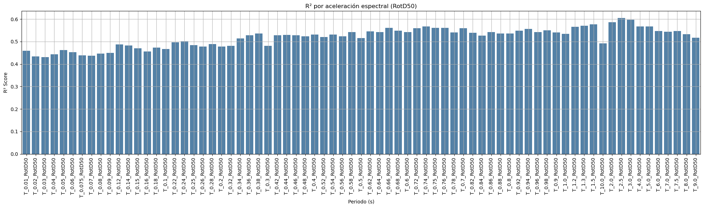
residuos = y_test_Crustal - y_pred_Crustal # matriz de residuos
df_residuos_crustal = pd.DataFrame(residuos, columns=Sa_Crustal)
df_residuos_largo_crustal = df_residuos_crustal.melt(var_name='Sa', value_name='Residuo')
# Graficar
plt.figure(figsize=(20, 8))
sns.boxplot(data=df_residuos_largo_crustal, x='Sa', y='Residuo')
plt.title("Distribución de residuos por aceleración espectral (test Multioutput con Catboost)")
plt.xticks(rotation=90)
plt.xlabel("Sa")
plt.ylabel("Residuo (Real - Predicho)")
plt.grid(True)
plt.tight_layout()
plt.show()
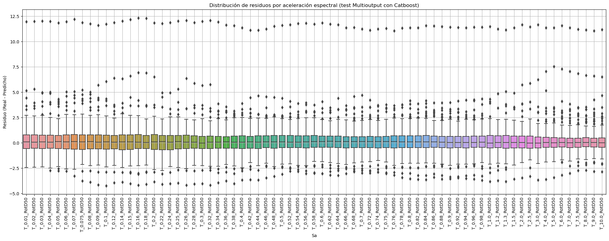
residuos_todos_crustal = Y_Crustal - y_pred_todo_Crustal # matriz de residuos
df_residuos_crustal_todos = pd.DataFrame(residuos_todos_crustal, columns=Sa_Crustal)
df_residuos_largo_crustal = df_residuos_crustal_todos.melt(var_name='Sa', value_name='Residuo')
# Graficar
plt.figure(figsize=(20, 8))
sns.boxplot(data=df_residuos_largo_crustal, x='Sa', y='Residuo')
plt.title("Distribución de residuos por aceleración espectral (Multioutput con Catboost)")
plt.xticks(rotation=90)
plt.xlabel("Sa")
plt.ylabel("Residuo (Real - Predicho)")
plt.grid(True)
plt.tight_layout()
plt.show()
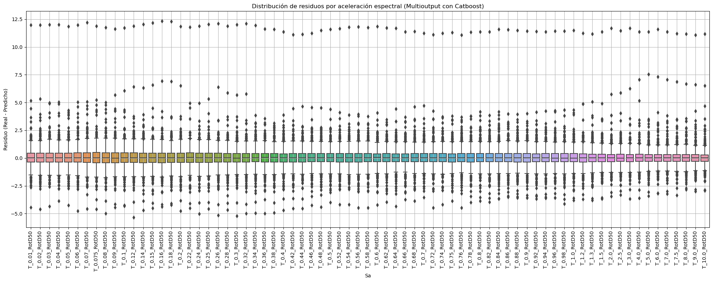
df_residuos_crustal_todos.describe().T
| count | mean | std | min | 25% | 50% | 75% | max | |
|---|---|---|---|---|---|---|---|---|
| T_0.01_RotD50 | 973.0 | 0.051828 | 0.830533 | -4.457769 | -0.375473 | 0.027867 | 0.430165 | 11.981913 |
| T_0.02_RotD50 | 973.0 | 0.050808 | 0.834568 | -4.618703 | -0.366017 | 0.022005 | 0.433743 | 11.988047 |
| T_0.03_RotD50 | 973.0 | 0.058504 | 0.843375 | -4.343426 | -0.375632 | 0.036538 | 0.453781 | 12.025918 |
| T_0.04_RotD50 | 973.0 | 0.056628 | 0.846237 | -3.877917 | -0.365770 | 0.024300 | 0.439626 | 12.016138 |
| T_0.05_RotD50 | 973.0 | 0.051118 | 0.847766 | -4.252939 | -0.353910 | 0.032818 | 0.440339 | 11.857426 |
| ... | ... | ... | ... | ... | ... | ... | ... | ... |
| T_7.0_RotD50 | 973.0 | 0.035610 | 0.729645 | -3.218231 | -0.285446 | 0.016982 | 0.306243 | 11.354685 |
| T_7.5_RotD50 | 973.0 | 0.040251 | 0.722436 | -3.339020 | -0.299570 | 0.024018 | 0.308556 | 11.204772 |
| T_8.0_RotD50 | 973.0 | 0.042599 | 0.727663 | -2.845462 | -0.300507 | 0.025400 | 0.318012 | 11.162872 |
| T_9.0_RotD50 | 973.0 | 0.038829 | 0.721902 | -3.000221 | -0.283347 | 0.011463 | 0.301946 | 11.064346 |
| T_10.0_RotD50 | 973.0 | 0.038454 | 0.725252 | -2.934137 | -0.287936 | 0.020486 | 0.290408 | 11.177400 |
73 rows × 8 columns
sismo_df = pd.DataFrame([
{'Hypocenter Depth (km)': 10, 'Magnitude': 4.5,'Tn':0.2, 'Rrup_OpenQuake': np.log(20)},
{'Hypocenter Depth (km)': 10, 'Magnitude': 5.5,'Tn':0.2, 'Rrup_OpenQuake': np.log(20)},
{'Hypocenter Depth (km)': 10, 'Magnitude': 6.5,'Tn':0.2, 'Rrup_OpenQuake': np.log(20)},
{'Hypocenter Depth (km)': 10, 'Magnitude': 7.5,'Tn':0.2, 'Rrup_OpenQuake': np.log(20)}
])
prediccion = modelo_crustal.predict(sismo_df) # shape: (4, 22)
import matplotlib.pyplot as plt
import numpy as np
test_crustal = np.array(np.exp(y_test_Crustal[00]))
pred_crustal = np.array(np.exp(y_pred_Crustal[00]))
plt.figure(figsize=(12, 6))
plt.plot(test_crustal, label='Valor real', color='black', linewidth=2, marker='o')
plt.plot(pred_crustal, label='Predicción', color='royalblue', linewidth=2, linestyle='--', marker='x')
for i in range(len(test_crustal)):
plt.plot([i, i], [test_crustal[i], pred_crustal[i]], color='gray', alpha=0.3, linewidth=0.8)
plt.title('Comparación de valores reales vs predichos')
plt.xlabel('Índice de muestra')
plt.ylabel('Valor')
plt.legend()
plt.grid(True)
plt.tight_layout()
plt.show()
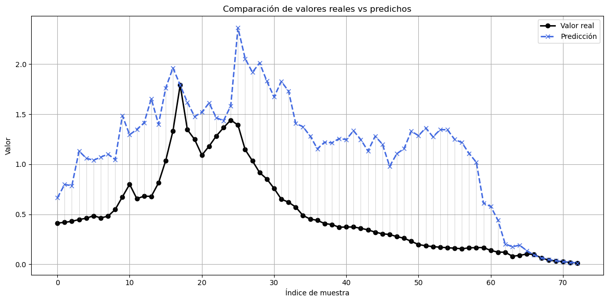
x_periodos = [float(col.split('_')[1]) for col in Sa_Crustal]
Sa_predichos = np.exp(prediccion) / 980 # shape: (4, 22)
test_crustal1 = np.array(np.exp(y_test_Crustal[2])/980)
pred_crustal1= np.array(np.exp(y_pred_Crustal[2])/980)
plt.figure(figsize=(12, 6))
plt.plot(x_periodos, Sa_predichos[0], label='Mw 4.5', color='red', linewidth=2, marker='o')
plt.plot(x_periodos, Sa_predichos[1], label='Mw 5.5', color='orange', linewidth=2, marker='o')
plt.plot(x_periodos, Sa_predichos[2], label='Mw 6.5', color='blue', linewidth=2, marker='o')
plt.plot(x_periodos, Sa_predichos[3], label='Mw 7.5', color='black', linewidth=2, marker='o')
plt.title('Espectros predichos para diferentes magnitudes')
plt.xlabel('Periodo (s)')
plt.ylabel('Sa (g)')
plt.xscale('log')
plt.yscale('log')
plt.grid(True, which='both', linestyle='--', linewidth=0.5)
plt.legend()
plt.tight_layout()
plt.show()
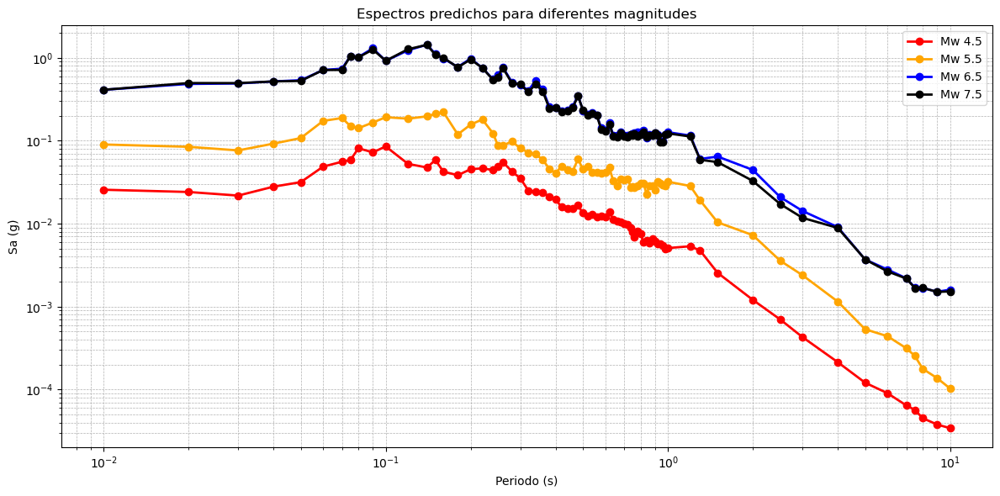
df_residuos_crustal.describe().T
| count | mean | std | min | 25% | 50% | 75% | max | |
|---|---|---|---|---|---|---|---|---|
| T_0.01_RotD50 | 292.0 | 0.176018 | 1.251484 | -2.424085 | -0.551071 | 0.092447 | 0.781951 | 11.981913 |
| T_0.02_RotD50 | 292.0 | 0.173030 | 1.257704 | -2.387584 | -0.528047 | 0.064077 | 0.781752 | 11.988047 |
| T_0.03_RotD50 | 292.0 | 0.197277 | 1.272886 | -2.361076 | -0.553346 | 0.106604 | 0.761116 | 12.025918 |
| T_0.04_RotD50 | 292.0 | 0.190738 | 1.279535 | -2.746127 | -0.539407 | 0.056874 | 0.765297 | 12.016138 |
| T_0.05_RotD50 | 292.0 | 0.172570 | 1.273119 | -2.750221 | -0.551522 | 0.119794 | 0.734791 | 11.857426 |
| ... | ... | ... | ... | ... | ... | ... | ... | ... |
| T_7.0_RotD50 | 292.0 | 0.120486 | 1.141482 | -2.992518 | -0.469694 | 0.012601 | 0.464892 | 11.354685 |
| T_7.5_RotD50 | 292.0 | 0.137028 | 1.121965 | -2.722807 | -0.440021 | 0.042752 | 0.474274 | 11.204772 |
| T_8.0_RotD50 | 292.0 | 0.144489 | 1.128795 | -2.714497 | -0.396492 | 0.052994 | 0.511922 | 11.162872 |
| T_9.0_RotD50 | 292.0 | 0.131957 | 1.127973 | -2.830464 | -0.409802 | 0.037773 | 0.455206 | 11.064346 |
| T_10.0_RotD50 | 292.0 | 0.130260 | 1.139677 | -2.856266 | -0.432366 | 0.021629 | 0.481178 | 11.177400 |
73 rows × 8 columns
Crustal con Redes Neuronales#
from tensorflow.keras.models import Sequential
from tensorflow.keras.layers import Dense, Dropout
from tensorflow.keras.callbacks import EarlyStopping
# Escalado
scaler_X = StandardScaler()
scaler_Y = StandardScaler()
X_scaled = scaler_X.fit_transform(X_Crustal)
Y_scaled = scaler_Y.fit_transform(Y_Crustal)
X_train_neural, X_test_neural, Y_train_neural, Y_test_neural = train_test_split(X_scaled, Y_scaled, test_size=0.3, random_state=0)
"""# 1. Separar primero
X_train_neural, X_test_neural, Y_train_neural, Y_test_neural = train_test_split(
X_Crustal, Y_Crustal, test_size=0.1, random_state=0
)
# 2. Escalado solo con entrenamiento
scaler_X = StandardScaler()
scaler_Y = StandardScaler()
X_train_neural = scaler_X.fit_transform(X_train_neural)
X_test_neural = scaler_X.transform(X_test_neural)
Y_train_neural = scaler_Y.fit_transform(Y_train_neural)
Y_test_neural = scaler_Y.transform(Y_test_neural)"""
'# 1. Separar primero\nX_train_neural, X_test_neural, Y_train_neural, Y_test_neural = train_test_split(\n X_Crustal, Y_Crustal, test_size=0.1, random_state=0\n)\n\n# 2. Escalado solo con entrenamiento\nscaler_X = StandardScaler()\nscaler_Y = StandardScaler()\n\nX_train_neural = scaler_X.fit_transform(X_train_neural)\nX_test_neural = scaler_X.transform(X_test_neural)\n\nY_train_neural = scaler_Y.fit_transform(Y_train_neural)\nY_test_neural = scaler_Y.transform(Y_test_neural)'
# Construcción del modelo
model = Sequential([
Dense(128, activation='relu', input_shape=(X_train_neural.shape[1],)),
Dropout(0.2),
Dense(64, activation='relu'),
Dense(Y_train_neural.shape[1]) # Tantas salidas como periodos de Sa
])
model.compile(optimizer='adam', loss='mse', metrics=['mae'])
# Entrenamiento
history = model.fit(
X_train_neural, Y_train_neural,
validation_split=0.2,
epochs=100,
batch_size=32,
callbacks=[EarlyStopping(monitor='val_loss', patience=10, restore_best_weights=True)],
verbose=1
)
Epoch 1/100
17/17 [==============================] - 2s 14ms/step - loss: 0.9769 - mae: 0.7547 - val_loss: 1.2704 - val_mae: 0.7533
Epoch 2/100
17/17 [==============================] - 0s 4ms/step - loss: 0.8448 - mae: 0.6907 - val_loss: 1.1540 - val_mae: 0.6765
Epoch 3/100
17/17 [==============================] - 0s 5ms/step - loss: 0.6679 - mae: 0.5921 - val_loss: 1.0528 - val_mae: 0.5841
Epoch 4/100
17/17 [==============================] - 0s 4ms/step - loss: 0.5572 - mae: 0.5222 - val_loss: 1.0483 - val_mae: 0.5551
Epoch 5/100
17/17 [==============================] - 0s 4ms/step - loss: 0.5241 - mae: 0.4980 - val_loss: 1.0277 - val_mae: 0.5445
Epoch 6/100
17/17 [==============================] - 0s 4ms/step - loss: 0.4934 - mae: 0.4856 - val_loss: 1.0303 - val_mae: 0.5451
Epoch 7/100
17/17 [==============================] - 0s 4ms/step - loss: 0.4901 - mae: 0.4775 - val_loss: 1.0251 - val_mae: 0.5385
Epoch 8/100
17/17 [==============================] - 0s 4ms/step - loss: 0.4828 - mae: 0.4750 - val_loss: 1.0234 - val_mae: 0.5425
Epoch 9/100
17/17 [==============================] - 0s 5ms/step - loss: 0.4810 - mae: 0.4752 - val_loss: 1.0228 - val_mae: 0.5430
Epoch 10/100
17/17 [==============================] - 0s 4ms/step - loss: 0.4731 - mae: 0.4710 - val_loss: 1.0285 - val_mae: 0.5411
Epoch 11/100
17/17 [==============================] - 0s 4ms/step - loss: 0.4700 - mae: 0.4658 - val_loss: 1.0213 - val_mae: 0.5423
Epoch 12/100
17/17 [==============================] - 0s 4ms/step - loss: 0.4674 - mae: 0.4673 - val_loss: 1.0209 - val_mae: 0.5399
Epoch 13/100
17/17 [==============================] - 0s 4ms/step - loss: 0.4651 - mae: 0.4610 - val_loss: 1.0137 - val_mae: 0.5428
Epoch 14/100
17/17 [==============================] - 0s 4ms/step - loss: 0.4658 - mae: 0.4657 - val_loss: 1.0273 - val_mae: 0.5385
Epoch 15/100
17/17 [==============================] - 0s 4ms/step - loss: 0.4666 - mae: 0.4605 - val_loss: 1.0133 - val_mae: 0.5391
Epoch 16/100
17/17 [==============================] - 0s 4ms/step - loss: 0.4497 - mae: 0.4579 - val_loss: 1.0195 - val_mae: 0.5475
Epoch 17/100
17/17 [==============================] - 0s 4ms/step - loss: 0.4587 - mae: 0.4574 - val_loss: 1.0191 - val_mae: 0.5406
Epoch 18/100
17/17 [==============================] - 0s 4ms/step - loss: 0.4587 - mae: 0.4632 - val_loss: 1.0127 - val_mae: 0.5406
Epoch 19/100
17/17 [==============================] - 0s 4ms/step - loss: 0.4529 - mae: 0.4596 - val_loss: 1.0179 - val_mae: 0.5410
Epoch 20/100
17/17 [==============================] - 0s 3ms/step - loss: 0.4517 - mae: 0.4562 - val_loss: 1.0211 - val_mae: 0.5432
Epoch 21/100
17/17 [==============================] - 0s 3ms/step - loss: 0.4488 - mae: 0.4544 - val_loss: 1.0184 - val_mae: 0.5468
Epoch 22/100
17/17 [==============================] - 0s 4ms/step - loss: 0.4466 - mae: 0.4548 - val_loss: 1.0162 - val_mae: 0.5417
Epoch 23/100
17/17 [==============================] - 0s 4ms/step - loss: 0.4486 - mae: 0.4572 - val_loss: 1.0267 - val_mae: 0.5459
Epoch 24/100
17/17 [==============================] - 0s 4ms/step - loss: 0.4494 - mae: 0.4525 - val_loss: 1.0161 - val_mae: 0.5444
Epoch 25/100
17/17 [==============================] - 0s 4ms/step - loss: 0.4348 - mae: 0.4494 - val_loss: 1.0172 - val_mae: 0.5423
Epoch 26/100
17/17 [==============================] - 0s 4ms/step - loss: 0.4487 - mae: 0.4529 - val_loss: 1.0204 - val_mae: 0.5466
Epoch 27/100
17/17 [==============================] - 0s 4ms/step - loss: 0.4474 - mae: 0.4542 - val_loss: 1.0183 - val_mae: 0.5441
Epoch 28/100
17/17 [==============================] - 0s 4ms/step - loss: 0.4462 - mae: 0.4497 - val_loss: 1.0130 - val_mae: 0.5466
# Evaluación en test
loss, mae = model.evaluate(X_test_neural, Y_test_neural)
print(f"MSE: {loss:.4f} - MAE: {mae:.4f}")
# Predicción
Y_pred_scaled = model.predict(X_test_neural)
Y_pred_scaled_train = model.predict(X_train_neural)
# Inversión del escalado
Y_pred_neural = scaler_Y.inverse_transform(Y_pred_scaled)
Y_true_neural = scaler_Y.inverse_transform(Y_test_neural)
Y_train_true_neural = scaler_Y.inverse_transform(Y_train_neural)
Y_train_pred_neural = scaler_Y.inverse_transform(Y_pred_scaled_train)
10/10 [==============================] - 0s 2ms/step - loss: 0.3217 - mae: 0.4443
MSE: 0.3217 - MAE: 0.4443
10/10 [==============================] - 0s 1ms/step
22/22 [==============================] - 0s 1ms/step
labels = [s.split('_')[1] for s in Sa_Crustal] # ['0.01', '0.02', ..., '10.0']
# Calcular la matriz de correlación
corr_matrix = np.corrcoef(Y_pred_neural.T)
plt.figure(figsize=(14, 12))
fig, ax = plt.subplots(figsize=(14, 12))
sns.heatmap(
corr_matrix,
xticklabels=labels,
yticklabels=labels,
cmap='coolwarm',
vmin=0.75,
vmax=1.0,
square=True,
cbar_kws={'label': 'Correlación'},
ax=ax
)
for i in range(corr_matrix.shape[0]):
for j in range(corr_matrix.shape[1]):
value = corr_matrix[i, j]
ax.text(
j + 0.5, i + 0.5,
f"{value:.2f}",
ha='center', va='center',
fontsize=8, color='black'
)
ax.set_title('Correlación entre aceleraciones espectrales predichas', fontsize=14)
plt.xticks(rotation=45, ha='right', fontsize=9)
plt.yticks(rotation=0, fontsize=9)
plt.tight_layout()
plt.show()
<Figure size 1400x1200 with 0 Axes>
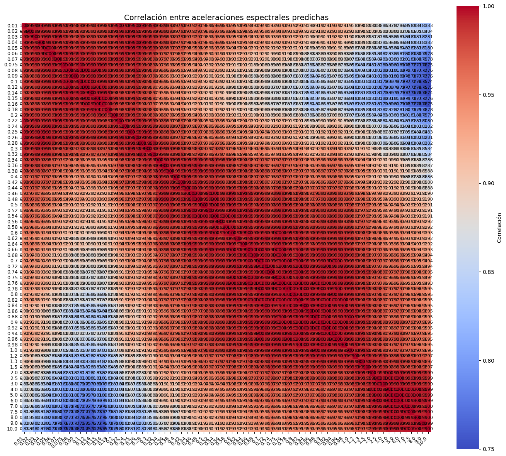
# R² del conjunto de test
y_test_df_neural = pd.DataFrame(Y_true_neural, columns=Sa_Crustal)
y_pred_df_neural = pd.DataFrame(Y_pred_neural, columns=Sa_Crustal)
r2_por_periodo_neural_test = {
col: r2_score(y_test_df_neural[col], y_pred_df_neural[col])
for col in Sa_Crustal
}
r2_test_df = pd.DataFrame.from_dict(r2_por_periodo_neural_test, orient='index', columns=['R² test'])
r2_test_df.index.name = "Sa"
r2_test_df.reset_index(inplace=True)
# R² del conjunto de entrenamiento
y_train_df_neural = pd.DataFrame(Y_train_true_neural, columns=Sa_Crustal)
y_pred_train_df_neural = pd.DataFrame(Y_train_pred_neural, columns=Sa_Crustal)
r2_por_periodo_neural_train = {
col: r2_score(y_train_df_neural[col], y_pred_train_df_neural[col])
for col in Sa_Crustal
}
r2_train_df = pd.DataFrame.from_dict(r2_por_periodo_neural_train, orient='index', columns=['R² train'])
r2_train_df.index.name = "Sa"
r2_train_df.reset_index(inplace=True)
# Unión de ambos DataFrames
r2_completo = pd.merge(r2_train_df, r2_test_df, on='Sa')
display(r2_completo)
| Sa | R² train | R² test | |
|---|---|---|---|
| 0 | T_0.01_RotD50 | 0.449771 | 0.590367 |
| 1 | T_0.02_RotD50 | 0.440317 | 0.578106 |
| 2 | T_0.03_RotD50 | 0.440209 | 0.572996 |
| 3 | T_0.04_RotD50 | 0.441200 | 0.576437 |
| 4 | T_0.05_RotD50 | 0.438182 | 0.569223 |
| ... | ... | ... | ... |
| 68 | T_7.0_RotD50 | 0.581329 | 0.706315 |
| 69 | T_7.5_RotD50 | 0.580419 | 0.704751 |
| 70 | T_8.0_RotD50 | 0.576431 | 0.721491 |
| 71 | T_9.0_RotD50 | 0.570729 | 0.718038 |
| 72 | T_10.0_RotD50 | 0.560644 | 0.711206 |
73 rows × 3 columns
import matplotlib.pyplot as plt
import seaborn as sns
plt.figure(figsize=(20, 6))
sns.barplot(data=r2_completo, x='Sa', y='R² test', color='steelblue')
# Ajuste estético
plt.xticks(rotation=45, ha='right')
plt.title("R² por periodo espectral en conjunto de prueba - Redes neuronales (RotD50)")
plt.xlabel("Periodo (s)")
plt.ylabel("R² Score en test")
plt.ylim(0, 1.05) # Ajuste de escala para R²
plt.grid(axis='y', linestyle='--', alpha=0.7)
plt.tight_layout()
plt.show()
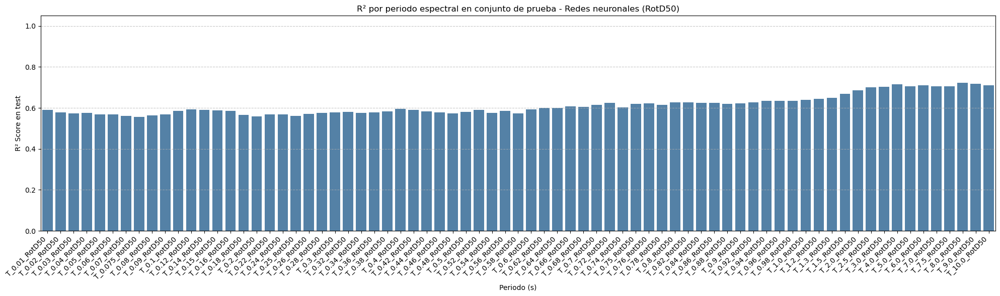
r2_long = pd.melt(r2_completo, id_vars='Sa', value_vars=['R² train', 'R² test'],
var_name='Conjunto', value_name='R²')
# Gráfico de barras agrupadas
plt.figure(figsize=(20, 6))
sns.barplot(data=r2_long, x='Sa', y='R²', hue='Conjunto')
plt.xticks(rotation=45, ha='right')
plt.title("R² por periodo espectral - Entrenamiento vs Prueba (Redes Neuronales - RotD50)")
plt.xlabel("Periodo (s)")
plt.ylabel("R² Score")
plt.ylim(0, 1.05)
plt.grid(axis='y', linestyle='--', alpha=0.7)
plt.legend(title='Conjunto')
plt.tight_layout()
plt.show()
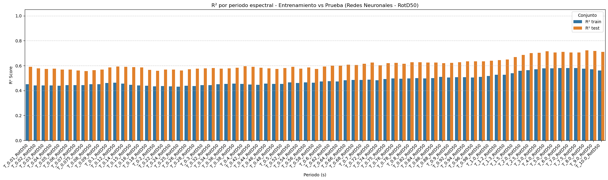
residuos_neural = Y_true_neural - Y_pred_neural # matriz de residuos
df_residuos_crustal_neural = pd.DataFrame(residuos_neural, columns=Sa_Crustal)
df_residuos_largo_crustal_neural = df_residuos_crustal_neural.melt(var_name='Sa', value_name='Residuo')
# Graficar
plt.figure(figsize=(20, 8))
sns.boxplot(data=df_residuos_largo_crustal_neural, x='Sa', y='Residuo')
plt.title("Distribución de residuos por aceleración espectral (test Redes neuronales)")
plt.xticks(rotation=90)
plt.xlabel("Sa")
plt.ylabel("Residuo (Real - Predicho)")
plt.grid(True)
plt.tight_layout()
plt.show()
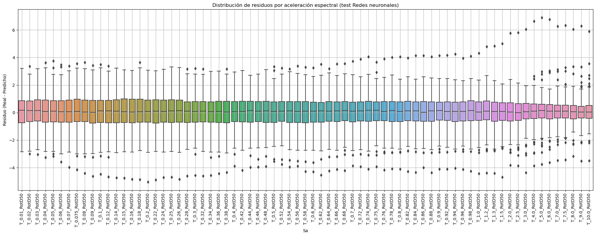
# Cada fila es [Hypocenter Depth (km), Magnitude, Tn, Rrup_OpenQuake]
X_nuevos = np.array([
[10, 4.5, 0.2,np.log(20)],
[10, 5.5, 0.2,np.log(20)],
[10, 6.5, 0.2,np.log(20)],
[10, 7.5, 0.2,np.log(20)]
]) # shape: (4, 4)
X_nuevos_scaled = scaler_X.transform(X_nuevos)
Y_pred_scaled = model.predict(X_nuevos_scaled)
Y_pred_log = scaler_Y.inverse_transform(Y_pred_scaled)
Y_pred = np.exp(Y_pred_log) / 980
1/1 [==============================] - 0s 36ms/step
# Periodos (s)
x_vals = [
[
0.010875285775728515, 0.020311081595293035, 0.03871896403583624,
0.0657349913573477, 0.1095248612988198, 0.16220474678481317,
0.2485678267476934, 0.39462667718357053, 0.68853136522965,
1.1547819846894594, 1.7261410118050462, 3.0109783106598242,
4.512831857425389, 6.243741513173544, 9.500670085088025
],[
0.010936468808161997, 0.021672600071547247, 0.03975249638696299,
0.0674567515926146, 0.11242100350620886, 0.1696918627096272,
0.2550162156074561, 0.4376245678535534, 0.7089826268593195,
1.1928586468756044, 1.8928606549514229, 3.2458970840552537,
4.767425315612845, 6.600813428549337, 9.685518641874227
],
[0.011225659486328633, 0.020970566828998064, 0.0392036290496946,
0.06786935608502156, 0.1153093188707811, 0.1775245721265105,
0.2615042873866538, 0.4494157672476691, 0.7291515387072267,
1.2534101877616912, 2.031108159529296, 3.5541972411039024,
5.125612412646484, 7.105407385250373, 9.83790314035472],
[
0.011299833228879636, 0.0211091302182597, 0.03945304324066873,
0.06833447001801594, 0.11612786474052615, 0.17869756886005894,
0.2738419634264367, 0.4528268847291676, 0.7795486438226266,
1.341350800816033, 2.26287735787004, 3.737348177498041,
5.389739766669773, 7.761335205956115, 10.34738261954024
]]
# Aceleración espectral (Sa) en g
y_vals = [[
0.026607250597988127, 0.02738419634264363, 0.03162277660168381,
0.042169650342858245, 0.061305579214982114, 0.08175230379436497,
0.061305579214982114, 0.029853826189179616, 0.010000000000000005,
0.003162277660168386, 0.0012589254117941688, 0.00040973210981354216,
0.0002238721138568347, 0.00009716279515771078, 0.000031622776601683856
],[
0.051582216507230584, 0.05787619883491206, 0.07079457843841384,
0.08912509381337463, 0.13335214321633246, 0.16788040181225597,
0.1258925411794168, 0.05956621435290106, 0.03162277660168381,
0.014537843856076644, 0.006683439175686149, 0.002900681198693156,
0.0014537843856076637, 0.0006878599123088081, 0.0003072557365267452
],[0.11220184543019647, 0.11885022274370183, 0.1372460961007562,
0.18302061063110578, 0.26607250597988097, 0.34474660657314926,
0.244061906804198, 0.1372460961007562, 0.08659643233600658,
0.050118723362727276, 0.02738419634264363, 0.01295686697517021,
0.0074989420933245735, 0.004097321098135422, 0.0019386526359522096],
[
0.244061906804198, 0.25852348395621927, 0.29006811986931547,
0.4097321098135415, 0.6130557921498209, 0.7498942093324559,
0.5623413251903494, 0.3349654391578278, 0.23040929760558482,
0.14962356560944334, 0.0944060876285924, 0.04869675251658634,
0.028183829312644536, 0.013724609610075633, 0.0074989420933245735
],]
x_periodos = [float(col.split('_')[1]) for col in Sa_Crustal]
# Configuración del gráfico
plt.figure(figsize=(12, 6))
labels = ['Mw 4.5', 'Mw 5.5', 'Mw 6.5', 'Mw 7.5']
colors = ['red', 'orange', 'blue', 'black']
for i in range(4):
plt.plot(x_periodos, Y_pred[i], label=f'{labels[i]} Neural', color=colors[i], marker='o', linewidth=2)
for i in range(4):
plt.plot(x_vals[i], y_vals[i], label=f'{labels[i]} GMM', color=colors[i], linestyle='--', marker='x', linewidth=2)
plt.title('Espectros predichos para diferentes magnitudes (modelo 4 variables)')
plt.xlabel('Periodo (s)')
plt.ylabel('Sa (g)')
plt.xscale('log')
plt.yscale('log')
plt.grid(True, which='both', linestyle='--', linewidth=0.5)
plt.legend()
plt.tight_layout()
plt.show()
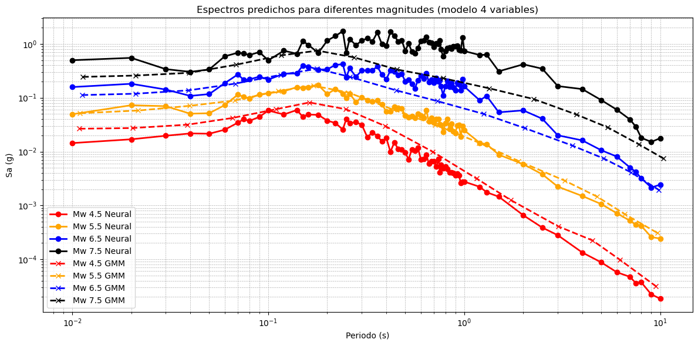
n =18
print(scaler_X.inverse_transform(X_test_neural[n].reshape(1, -1)))
xreal = scaler_X.inverse_transform(X_test_neural[n].reshape(1, -1))
xreal[0][3]=np.exp(xreal[0][3])
print(xreal)
[[27. 4.7 0.1 4.76217636]]
[[2.70000000e+01 4.70000000e+00 1.00000000e-01 1.17000284e+02]]
x_periodos = [float(col.split('_')[1]) for col in Sa_Crustal]
# Convertimos de log(Sa) a Sa real (asumiendo log natural) y luego a g dividiendo por 980
test_crustal_neural = np.exp(Y_true_neural) / 980
pred_crustal_neural = np.exp(Y_pred_neural) / 980
# Comparamos Mw 6.5, que según tu orden es el índice 2
plt.figure(figsize=(12, 6))
plt.plot(x_periodos, test_crustal_neural[n], label='Real', color='black', marker='o')
plt.plot(x_periodos, pred_crustal_neural[n], label='Predicción', color='blue', marker='x')
plt.title('Espectro Real vs Predicho')
plt.xlabel('Periodo (s)')
plt.ylabel('Sa (g)')
plt.xscale('log')
plt.yscale('log')
plt.grid(True, which='both', linestyle='--', linewidth=0.5)
plt.legend()
plt.tight_layout()
plt.show()
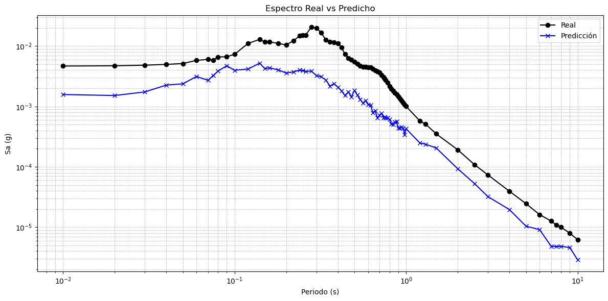